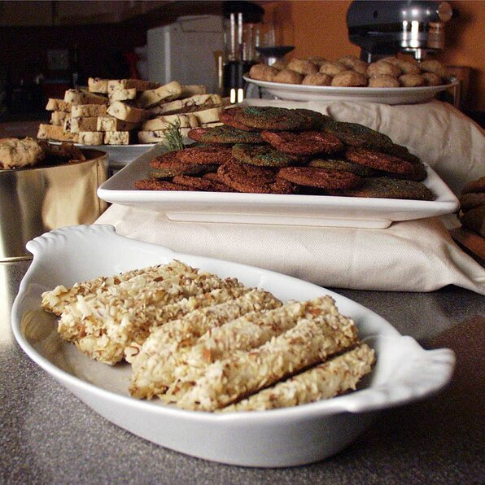

<
Christmas Cookies
Christmas Cookies!!!

Description
A cookie is a baked or cooked snack or dessert that is typically small, flat and sweet.
It usually contains flour, sugar, egg, and some type of oil, fat, or butter.
It may include other ingredients such as raisins, oats, chocolate chips, nuts, etc.
Ingredients
- 4 cups molasses
- 2 cups butter
- teaspoon salt
- 2 teaspoons ground allspice
- 3 cups dried currants
Steps
- Boil molasses and sugar until the sugar dissolves. Let the syrup cool.
- Grind nuts, raisins, currants and citron, and blend together with the butter or lard in a large bowl. Add the cooled syrup. Mix in the spices, anise oil, eggs, salt, and the sour milk. Mix in soda and flour. Rest the dough in the refrigerator for several days.
- The dough can be rolled out and cut, or shaped into rolls and sliced. Place on greased cookie sheets.
- Bake at 350 degrees F (175 degrees C) for 10 to 20 minutes. Cool on wire racks.